About
British bloke, in San Francisco via London, Singapore, Barcelona, and Hong Kong ● Second Life developer during the day since 2004 ● Enthusiastic WebGL/WebVR hacker in the evenings ● Founder of Industrial Might and Logic Combat Robots ● Eager traveller ● Crossfit and indoor rowing aficionado ● Insanely happy husband and father ● Recent updates ● Contact me
WebGL, WebVR and C++ apps, experiments and code
-
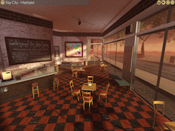
360 Snapshot Viewer
An early iteration of something I have been working on for the Second Life viewer - support for exporting a 360 snapshot of any region and viewing it on the web. This version also supports exporting an equirectangular image with the right meta-data headers so it can be uploaded to sites like Facebook or Flickr and viewed correctly. More examples from the ever amazing Torley Linden can be found here and here.
-
Dullahan
A headless browser SDK that is designed to make it easier to write applications that render modern web content (including WebGL) directly to a memory buffer, inject synthesized mouse and keyboard events and interact with web based features like JavaScript or cookies. Source code, pre-built Win32 binaries and some simple tests included.
-
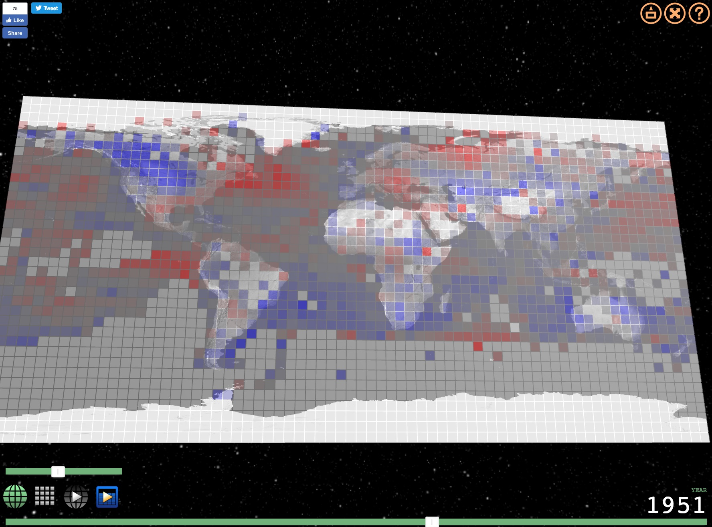
Global Temperature Change WebGL
An experiment that tries to illustrate how global temperatures on earth have changed between 1850 and 2016. Data via UK Met Office Hadley Centre for Climate Change. Inspired by the great work of Ed Hawkings, a climate scientist in the National Centre for Atmospheric Science (NCAS) at the University of Reading.
-
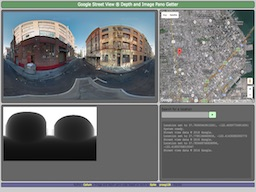
Pano Getter
After playing with Street Cloud, French film maker William Laboury contacted me and asked if I could help with an app to extract the depth panos from Google Street View for a video he was working on. I was happy to help and leaning on some earlier work along with some code from others (see credits), I put together Pano Getter. Let me know what you think.
-
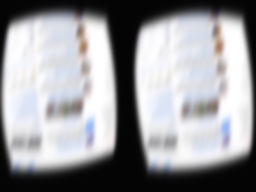
VR Web and Media Browser
I've been quiet for a while because I've been working on a C++ based VR web and media browser experiment in my spare time. It renders any web content using the latest version of Chrome (v51) via CEF and any video using the latest version of VLC. Shaping up nicely but I don't have an Oculus CV1 headset so if anyone out there has a spare one or wants to help fund the project, please get in touch :) Nothing to show publicly yet but details soon.
-
GeomeTree
Something I entered for the Christmas Experiment 2015 site but evidently, it wasn't high enough quality. I still like it though - Happy Holidays to everyone.
-
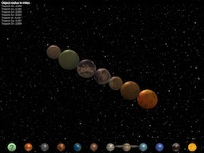
Celestial Bodies
Another updated experiment - this time it's a new version of the Planet Compare app that allows you to compare the sizes of planets in our solar system. This updated and improved version lets you compare the sun, the planets and now, their major moons.
-
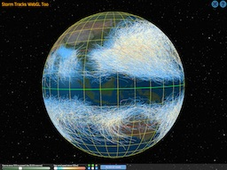
Storm Tracks WebGL Too
An updated version of a previous experiment I made years ago to plot the tracks of storms. It now uses much more efficient technology to render everything and currently displays all 9,100+ storms and almost 250,000 track points for storms from 1850 up to the present day. 2015-11-06: Updated to include Cyclone Megh in Arabian Sea.
-
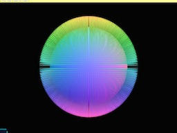
Buffer Geometry Selective Draw
Three.js BufferGeometry is very fast but only one draw call so it's not possible to hide or show parts of it easily. This example illustrates a way to do that by setting an attribute on each vertex and culling them out as necessary in a shader. Feedback appreciated
-
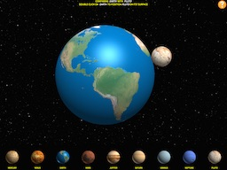
Planet Compare
Experiment to compare the relative sizes of planets in our solar system, including of course the new darling, Pluto. Updated to support the Sun and the Moon.
-
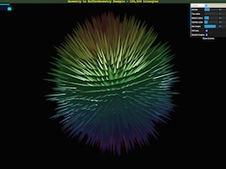
Geometry to BufferGeometry
The THREE.Geometry classes are easy to use but slow and the THREE.BufferGeometry class is fast but hard to use. This experiment tries to get the best of both worlds by creating geometry the easy way and transforming it into the fast way. Works well on mobile too. Updated to support multiple geometry types
-
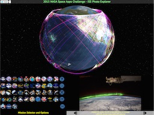
ISS Photo Explorer
My entry for the 2015 NASA Space Apps Challenge. Provides a way to view and explore the almost 1.8 million photos taken from the International Space Station over 15 years and 44 missions. Updated to include all of Mission 43's 173,544 photos and the 9,388 current ones from Mission 44
-
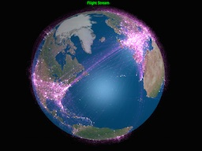
Flight Stream
Experiment to visualize all of the worlds flights. Not displayed in real time or on a correct schedule although that might be nice for version 2.
-

Country Selector
Second attempt at extruded earth visualization I'm working on for a bigger project.
-
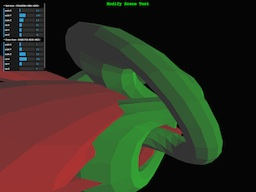
amui - Add Manipulator UI
Experiment to let you add manipulator UI (via dat.GUI) to modify objects in a three.js scene on any page via a bookmarklet.
-
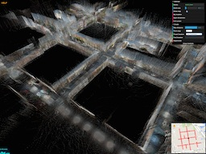
Street Cloud Flow
The next iteration of Street Cloud. This version generates multiple views based on a starting location. Lots left to do but makes quite beautiful images. See Help dialog for more details.
-
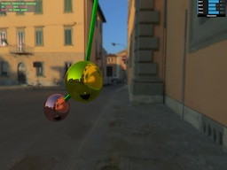
Double Pendulum
Inspired by fascinating illustration of double pendulum physics in ~100 lines of JavaScript, I made a WebGL version using one of the three.js examples as a starting point.
-
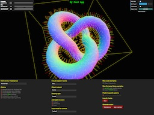
Three.js Interactive App Template Generator
Generate a template three.js application using interactive controls and use it as the starting point for your next masterpiece. Select options, features and code then save it off as a zip file. Updated (2014-06-27): Now you can send it to a JS Fiddle and include helper geometry objects.
-
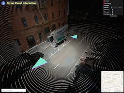
Street Cloud Interactive
An experiment to render Google Street View ® scenes as 3D point clouds using the LiDAR data captured along with the regular panorama images. A rudimentary navigation system allows you to move between connected locations. Updated (2014-07-09) Change in internals of StreetView API broke it for a while :(:
-
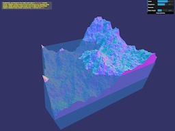
WebGL Terrain
Noticed a really neat page that describes how to make a terrain generator in 130 lines of JavaScript. Thought it would be interesting to make an interactive WebGL version.
-
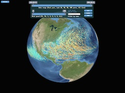
Storm Tracks WebGL
Interactive map of hurricanes, typhoons, cyclones and tropical storm tracks from 1848 to 2013 including Super Typhoon Haiyan/Yolanda.
-
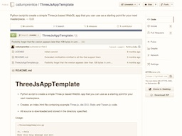
Three.JS App Template
Simple Python script to generate a template Three.js app that you can use as a starting point for your next masterpiece.
-
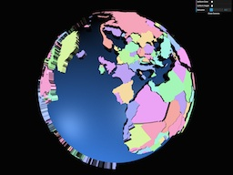
Extruded Earth
Experimenting with data visualization by extruding world countries based on a metric.
-
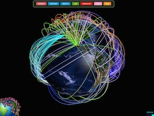
Connected Planet
Lat/long connected spline based arcs over planet Earth with logo, tweening and UI.
-
Pixi.js Test
Experimenting by mixing up bits of Pixi.js demos. Click to jump.
-
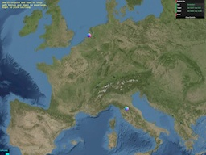
Globe Manipulator
Manipulate a globe and go to or pick, lat/long coordinates.
-
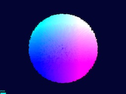
Fur Ball
Testing buffer geometry with 100,000 lines - next, make it move with a shader.
-
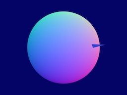
Sphere/Ray Intersection
Testing sphere and ray intersection code.
-
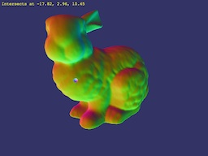
Pick Point From Model
More complex intersection test against a 3D model
-
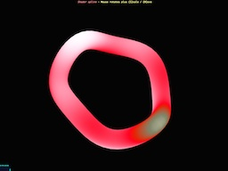
Shader Spline
Animated shader on spline.
-
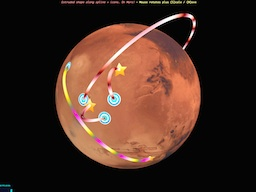
Spline Planet
Red planet with extruded circle splines plus animated shader and collinear icons.
-
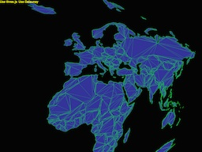
Delaunay Triangulation
I wanted to subdivide country outlines into triangles and thought Delaunay triangulation was the right answer but it's not.
-
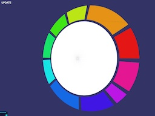
Concept Widget
Experimental canvas based UI widget with lovely people at Concept Arts.
-
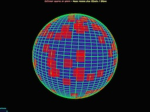
Squares On A Sphere
Testing how to render collinear squares on a sphere.
-
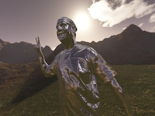
CTM Loader Test
Test loading model from CTM file and apply environment map.
-
Collada Duck
Load a model of a duck from a Collada file.
Other stuff
-
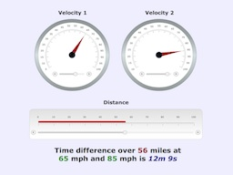
Wizard of Speed, Time and Distance
Discover how many minutes speeding really buys you.
-
Second Life
My day job at Linden Lab since 2004
-
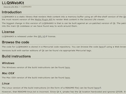
LLQtWebKit
Open source project from 2005 that renders web content to a texture.
-
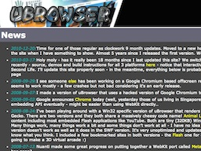
UBrowser
Open source project from 2006 that displays a 3D web browser.
Recent updates
● 2016-12-06: Added new experiment - 360 Snapshot Viewer
● 2016-11-26: Added C++ off screen browser rendering library Dullahan
● 2016-09-10: Added new experiment - Global Temperature Change WebGL
● 2016-07-14: Added new experiment - Pano Getter
● 2016-07-12: Added cryptic details of experimental VR browser
● 2015-12-11: Added new experiment - GeomeTree
● 2015-10-22: Added new experiment - Celestial Bodies
● 2015-10-22: Updated Storm Tracks WebGL Too to include Hurricane Patricia.
● 2015-10-11: Added new experiment - Storm Tracks WebGL Too
● 2015-10-10: Added new example - Buffer Geometry Selective Draw
● 2015-07-25: Added new experiment - Planet Compare
● 2015-07-11: Updates ISS Photo Explorer with Missions 43 & 44
● 2015-05-17: Added Geometry to BufferGeometry experiment
● 2015-04-12: Added ISS Photo Explorer
● 2015-03-14: Added Country Selector
● 2015-02-16: Added Flight Stream app
● 2015-01-28: Updated ISS Photo Viewer app to more generic mouse wheel code
● 2015-01-10: Moved to GitHub and added links to souce
● 2014-11-20: Added ISS Photo Viewer app
● 2016-12-06: Added new experiment - 360 Snapshot Viewer
● 2016-11-26: Added C++ off screen browser rendering library Dullahan
● 2016-09-10: Added new experiment - Global Temperature Change WebGL
● 2016-07-14: Added new experiment - Pano Getter
● 2016-07-12: Added cryptic details of experimental VR browser
● 2015-12-11: Added new experiment - GeomeTree
● 2015-10-22: Added new experiment - Celestial Bodies
● 2015-10-22: Updated Storm Tracks WebGL Too to include Hurricane Patricia.
● 2015-10-11: Added new experiment - Storm Tracks WebGL Too
● 2015-10-10: Added new example - Buffer Geometry Selective Draw
● 2015-07-25: Added new experiment - Planet Compare
● 2015-07-11: Updates ISS Photo Explorer with Missions 43 & 44
● 2015-05-17: Added Geometry to BufferGeometry experiment
● 2015-04-12: Added ISS Photo Explorer
● 2015-03-14: Added Country Selector
● 2015-02-16: Added Flight Stream app
● 2015-01-28: Updated ISS Photo Viewer app to more generic mouse wheel code
● 2015-01-10: Moved to GitHub and added links to souce
● 2014-11-20: Added ISS Photo Viewer app